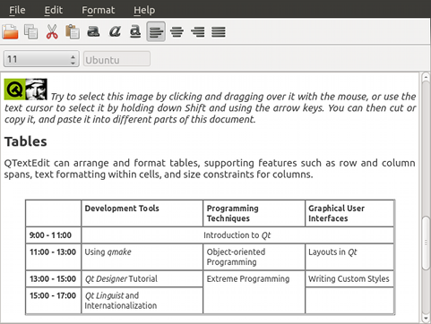

Qt Quick Controls 1 - Text Editor Example
A QML app using Qt Quick Controls and a C++ class to provide a fully-functional rich-text editor application.

The Text Editor Example presents a sample HTML file using the TextArea control, preserving the HTML formatting. It uses a C++ class to handle the document by providing options to open, format, and edit. The app also lets you open and edit a plain text files.
The C++ class, DocumentHandler, extends QObject and is registered as a QML type under the namespace, "org.qtproject.example 1.0".
The following snippets show how the type is registered under a namespace and later imported by main.qml.
QML type registration:
#include <QtQml/qqml.h> ... qmlRegisterType<DocumentHandler>("org.qtproject.example", 1, 0, "DocumentHandler"); ...
QML namespace import:
import org.qtproject.example 1.0
For more information about registering C++ classes as QML types, see Defining QML Types from C++.
Running the Example
To run the example from Qt Creator, open the Welcome mode and select the example from Examples. For more information, visit Building and Running an Example.